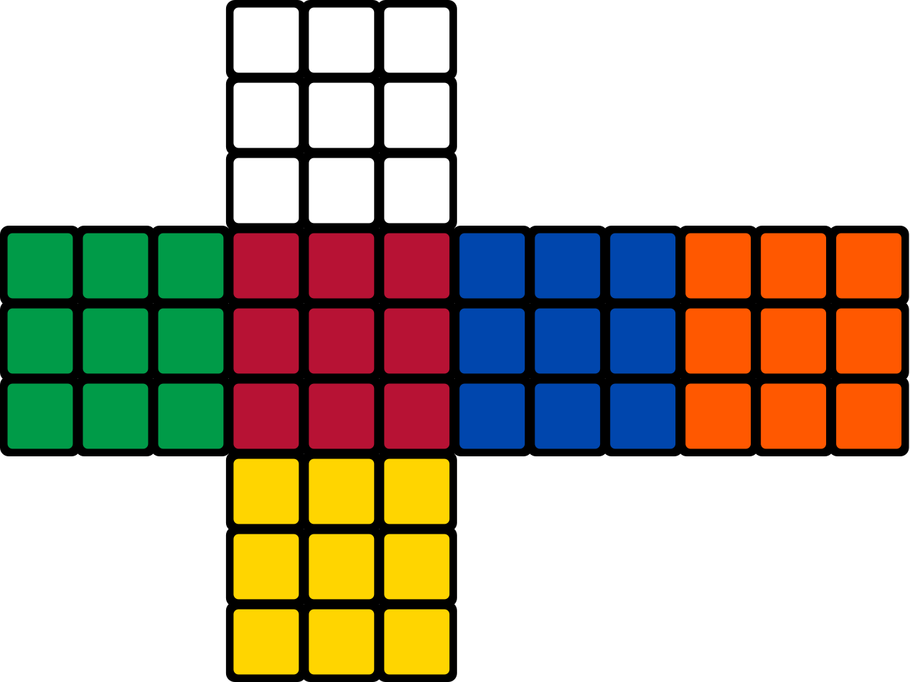
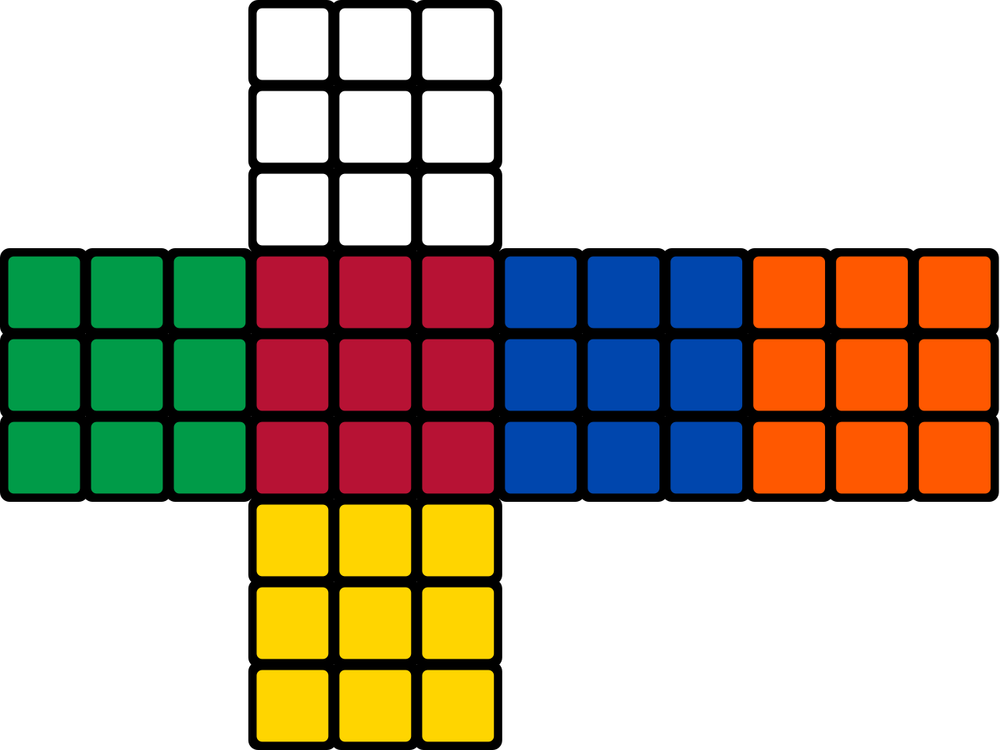

The original (3×3×3) Rubik's Cube has eight corners and twelve edges. There are 8! (40,320) ways to arrange the corner cubes. Each corner has three possible orientations, although only seven (of eight) can be oriented independently; the orientation of the eighth (final) corner depends on the preceding seven, giving 37 (2,187) possibilities. There are 12!/2 (239,500,800) ways to arrange the edges, restricted from 12! because edges must be in an even permutation exactly when the corners are. (When arrangements of centres are also permitted, as described below, the rule is that the combined arrangement of corners, edges, and centres must be an even permutation.) Eleven edges can be flipped independently, with the flip of the twelfth depending on the preceding ones, giving 211 (2,048) possibilities.[52]
8
!
×
3
7
×
12
!
2
×
2
11
=
43,252,003,274,489,856,000
{\displaystyle {8!\times 3^{7}\times {\frac {12!}{2}}\times 2^{11}}=43{,}252{,}003{,}274{,}489{,}856{,}000}
which is approximately 43 quintillion.[53] To put this into perspective, if one had one standard-sized Rubik's Cube for each permutation, one could cover the Earth's surface 275 times, or stack them in a tower 261 light-years high.
 
